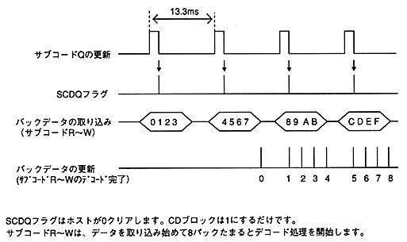

Subcode Q is updated every frame (1 sector). The SCDQ flag is 1 each time the subcode Q is updated. (Same as the periodic response update timing)
Subcodes R to W are updated in 4 packs (1 packet) per frame and stored in the pack buffer. The CD block has a pack buffer for 24 packs (6 packets) with a ring buffer structure.
<< For CD-DA playback (standard speed) >>

Figure 4.5 Subcode update and SCDQ flag timing